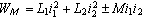

ZM = jXM = jωM - сопротивление взаимной индукции катушек.
Можно показать, что запас магнитной энергии в поле двух индуктивно связанных катушек
|  | (3.98) |
| 3.6.4. Уравнения электрического равновесия в контурах с ЭДС (само)индукции и ЭДС взаимоиндукции |
|||||||||
|
|||||||||
|
|
|||||||||